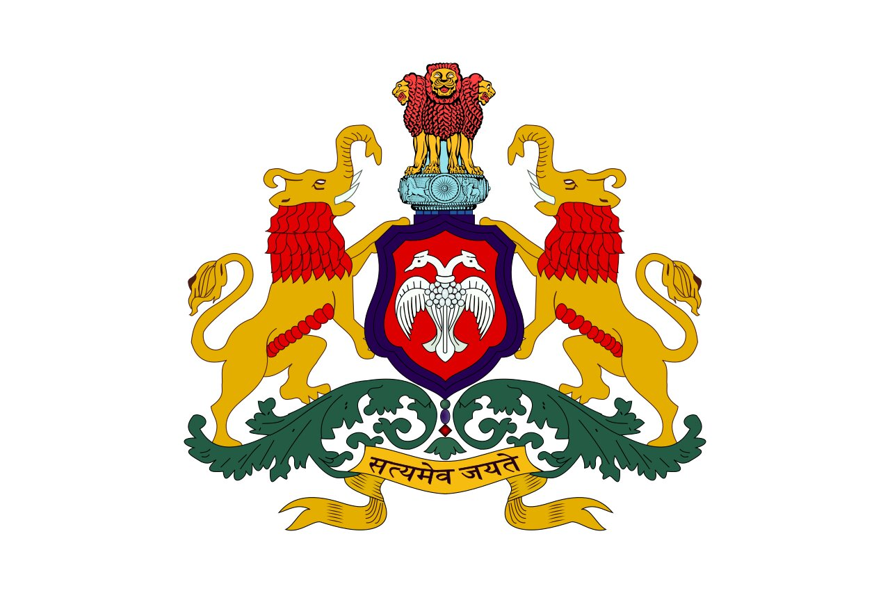
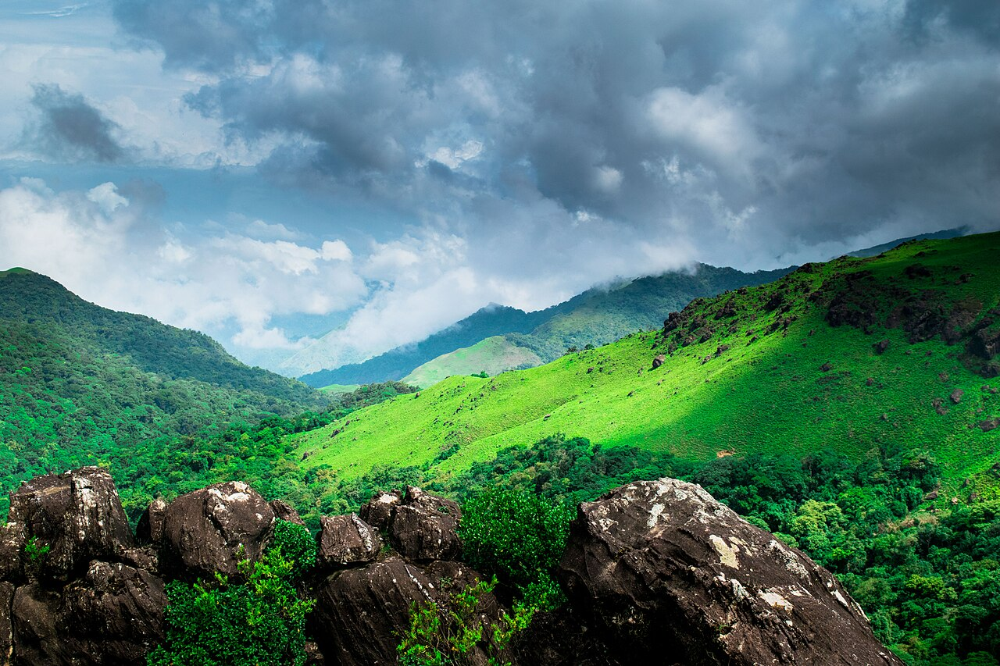
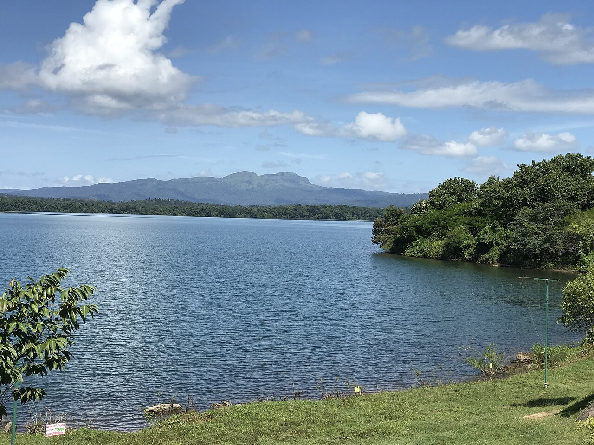
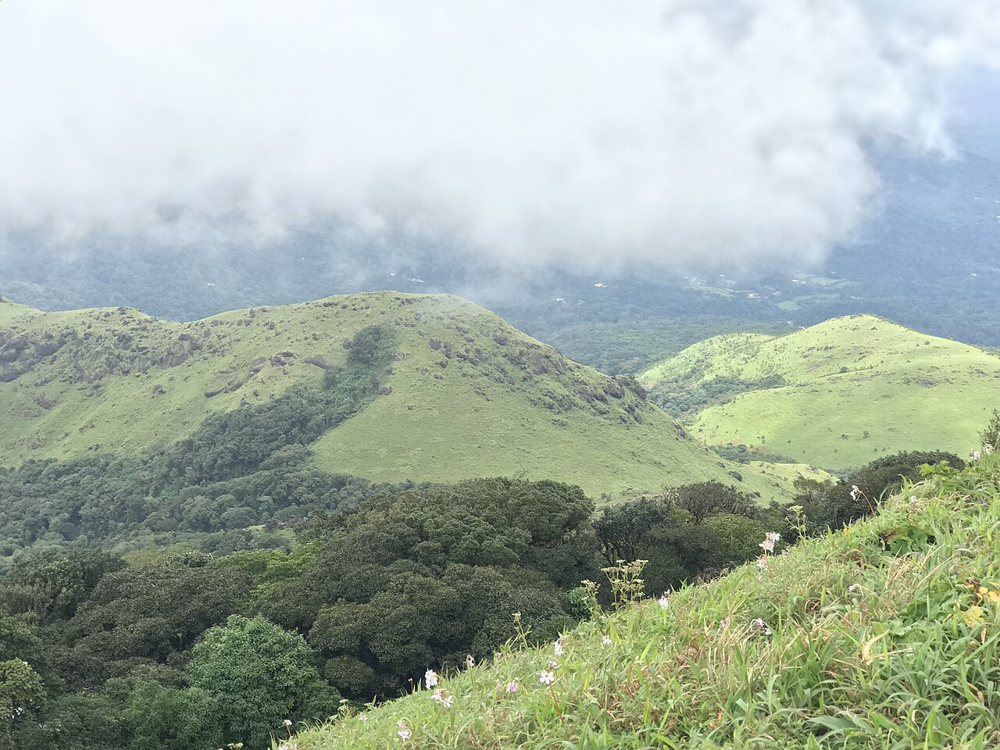
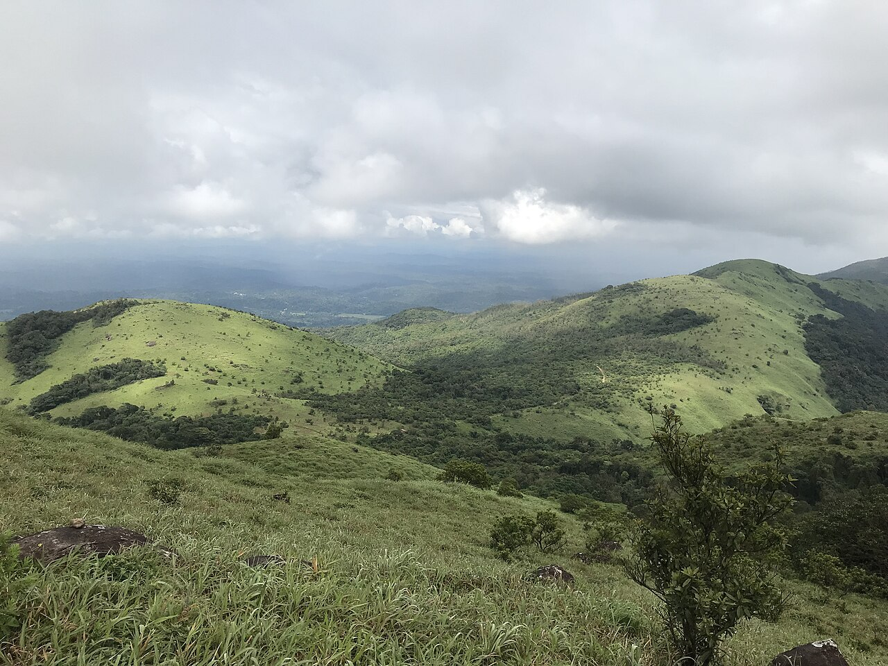
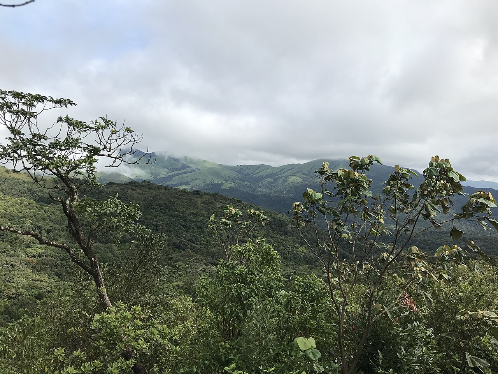
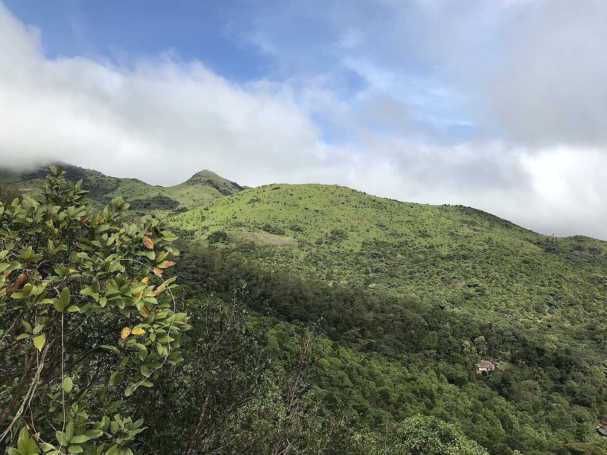
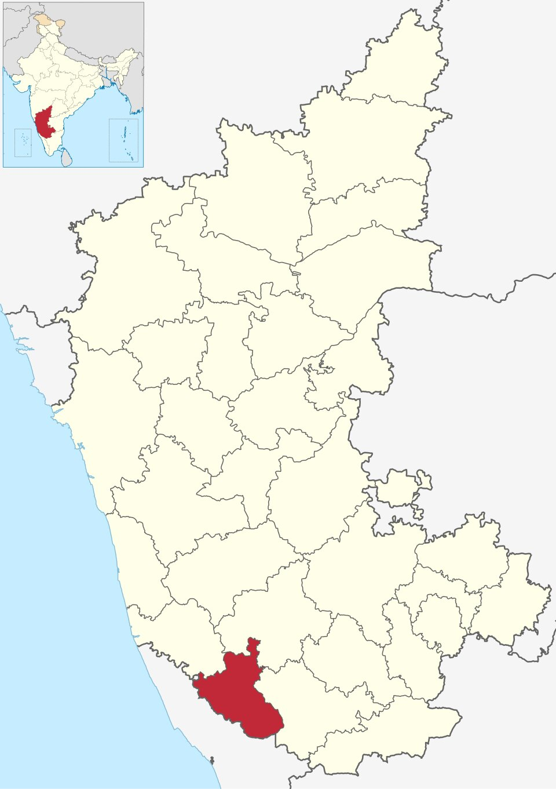

Kodagu district also known by its former name Coorg, Kodava: is an administrative district in the Karnataka state of India. Before 1956, it was an administratively separate Coorg State at which point it was merged into an enlarged Mysore State.


Kodagu is located on the eastern slopes of the Western Ghats. It has a geographical area of 4,102 km2 (1,584 sq mi).[6] The district is bordered by Dakshina Kannada district to the northwest, Hassan district to the north, Mysore district to the east, Kasaragod district of Kerala in west and Kannur district of Kerala to the southwest, and Wayanad district of Kerala to the south. It is a hilly district, the lowest elevation being 50 metres (160 ft) above sea-level near makutta. The highest peak, Tadiandamol, rises to 1,750 metres (5,740 ft), with Pushpagiri, the second highest, at 1,715 metres (5,627 ft). The main river in Kodagu is the Kaveri (Cauvery), which originates at Talakaveri, located on the eastern side of the Western Ghats, and with its tributaries, drains the greater part of Kodagu.
Tadiandamol or Thadiyandamol is the highest mountain of Madikeri taluk Kodagu district, Karnataka, India. It is the first highest peak in Karnataka, after Mullayyanagiri & Kudremukha.[1] It is located Western Ghats range, and reaches an elevation of 1,748 m. The mountain has patches of shola forests in the valleys.
The Nalaknad (also known as Nalnad – meaning 4 villages) palace at the foothills is an important historical landmark.
It is a place of interest for trekkers and naturalists. The climb to the top and back can be completed as a day hike(within 5hrs) and the entry is closed at 5:00 pm; camping is banned since December 2016.The best time to visit the peak is July-end to September(after monsoon) as greenery is observed well in these months.





To know more about Kodagu District Click the link given below:
More about kodagu districtCopyright © 2023 Kodagu District. All rights reserved.
Email:cm@karnataka.gov.in or cm.kar@nic.in.
Telephone: +91 080-22032848